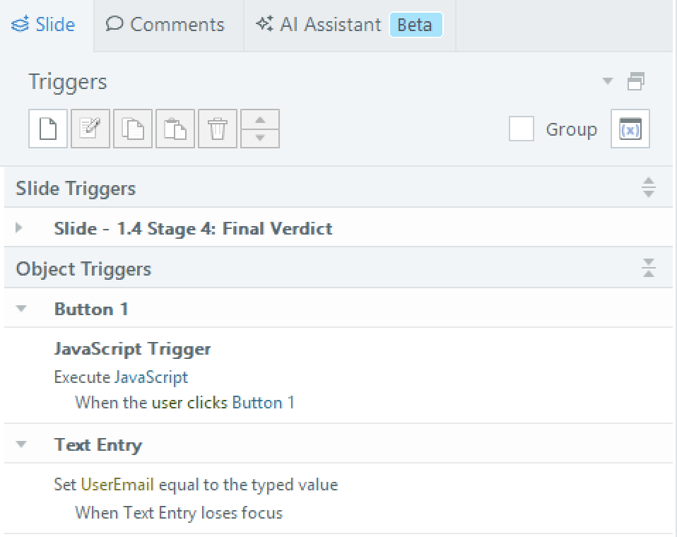
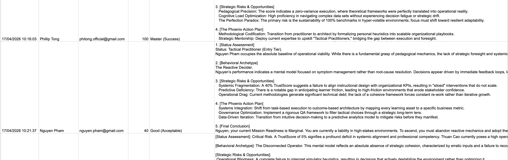

Branching Behavioral Simulator — Articulate Storyline 360
Capturing decision patterns under pressure through high-fidelity simulation and automated data logging.
The Problem
Standard eLearning often only tells us if a learner finished a course — not why they made each decision along the way. For a scenario that simulates high-stakes negotiation, completion data alone isn't enough. The real question is: what does a learner's decision pattern reveal about their thinking?
Most quiz-based assessments give a score. This project was designed to give something more useful — a picture of how a learner thinks under pressure.
Core Objective
Simulate a "Friday Night Crisis" scenario where a Project Lead must balance client pressure, team capacity, and stakeholder trust across 3 decision stages. Each choice updates a hidden TrustScore variable, which determines the final outcome and feedback the learner receives.
What I Built
A branching behavioral simulator in Articulate Storyline 360 with advanced logic integration:

- → 3 decision stages: Negotiation → Diplomacy → Team Alignment.
- → TrustScore and Stress Meter variables: Tracking learner choices across the entire scenario.
Design Decisions
Why branching?
Linear scenarios tell learners what to do. Branching scenarios reveal what learners actually do.
Tracking TrustScore
A single decision doesn't define a pattern. Tracking cumulative scores shows consistency.

Technical Evidence



What I Learned
- → Branching logic requires mapping every path before touching the tool. Storyboarding first saves significant rework.
- → Designing the TrustScore variable taught me how to translate abstract learning objectives into measurable outcomes.
- → Connecting SCORM to an external pipeline showed me how behavioral data can inform future pedagogical iterations.
Tools Used
Articulate Storyline 360 · JavaScript (ES6) · n8n · Google Sheets · Gemini AI · Moodle (SCORM 1.2 deployment)